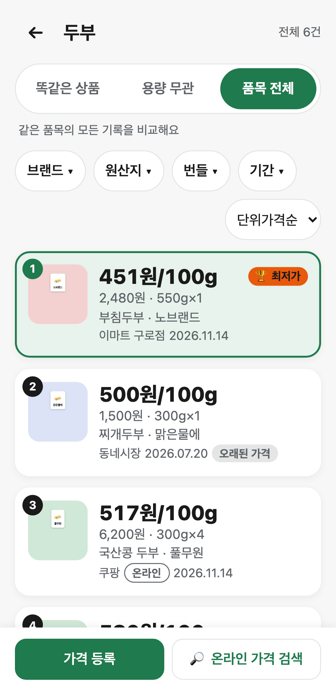
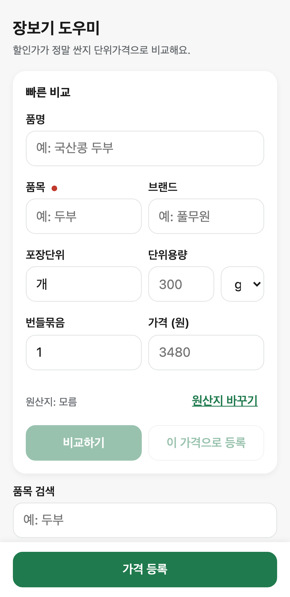
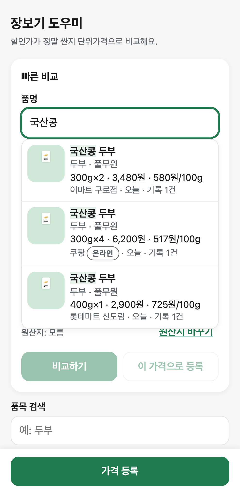
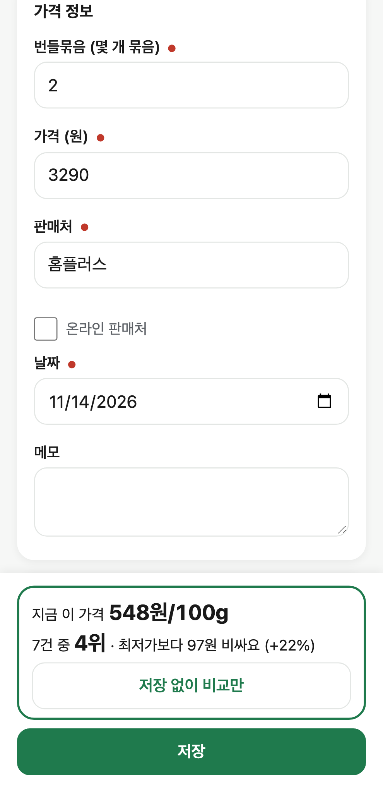
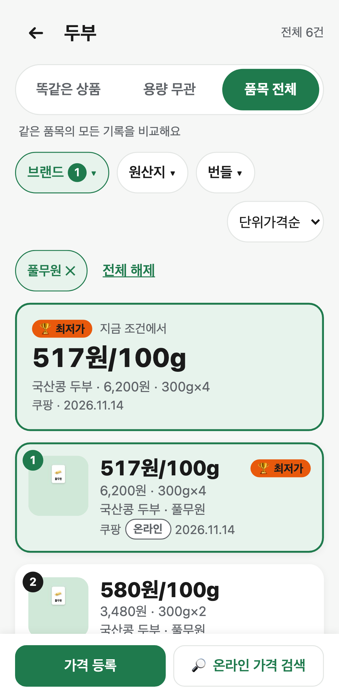
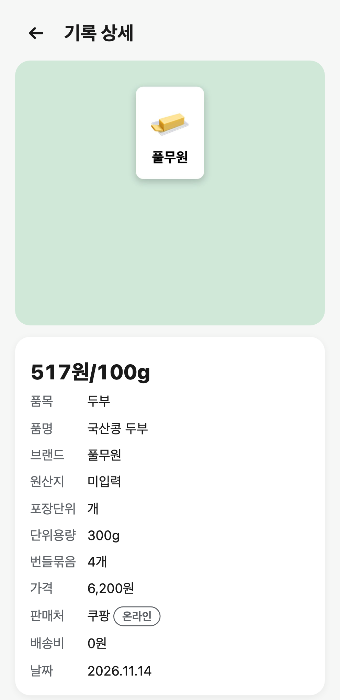

| 지금 쓰는 방법 | 한계 |
|---|---|
| 기억, 메모, 사진첩 | 용량이 다르면 비교 불가, 검색과 계산이 안 됨 |
| 가격 비교 사이트 | 온라인 가격 위주. 내가 산 오프라인 가격이 없음 |
| 가계부 앱 | 지출 합계 중심. 상품별 단위가격 비교 없음 |
장 볼 때마다 가격을 조금씩 기록해 "나만의 가격 DB"를 쌓고, 용량이 달라도 100g당 · 100ml당 · 1개당으로 바꿔 비교해요.
단위가격 = (가격 + 배송비) ÷ (단위용량 × 번들묶음) · kg→g, L→ml 자동 환산 · 무게와 부피는 섞지 않아요






| 장보기 도우미만의 점 | |
|---|---|
| 내가 산 오프라인 가격 + 온라인 가격을 한 목록에 | 용량 · 묶음이 달라도 단위가격으로 |
| 서버 없이 기기에 저장, 마트 안 약한 통신에서도 동작 | 모든 기록에 UUID · 시각 · 소유자: 나중에 오프라인 최저가 DB로 확장 |
| 영역 | 선택 | 확인한 것 |
|---|---|---|
| 앱 | React + TypeScript + Vite, PWA | 홈 화면 설치, 네트워크 없이 등록 · 조회 (E2E) |
| 저장 | IndexedDB (Dexie), 서버 없음 | "해당사항 없음"과 미입력 구분 저장, 사진 공유 · 정리 |
| 로직 | 화면과 분리된 순수 함수 | 단위환산 · 단위가격 · 필터 · 정렬 · 순위 단위 테스트 |
| 모바일 | 폭 360px 기준 | 가로 스크롤 없음, 터치 영역 44px 이상 (E2E) |
| 성능 | 메모리 계산 | 기록 1,000건, 필터 반영 300ms 이내 (E2E) |
다음 단계 · 실제 장보기에서 써 보며 측정 · 바코드/OCR 입력 · 여러 사람 기록을 모은 오프라인 최저가 DB